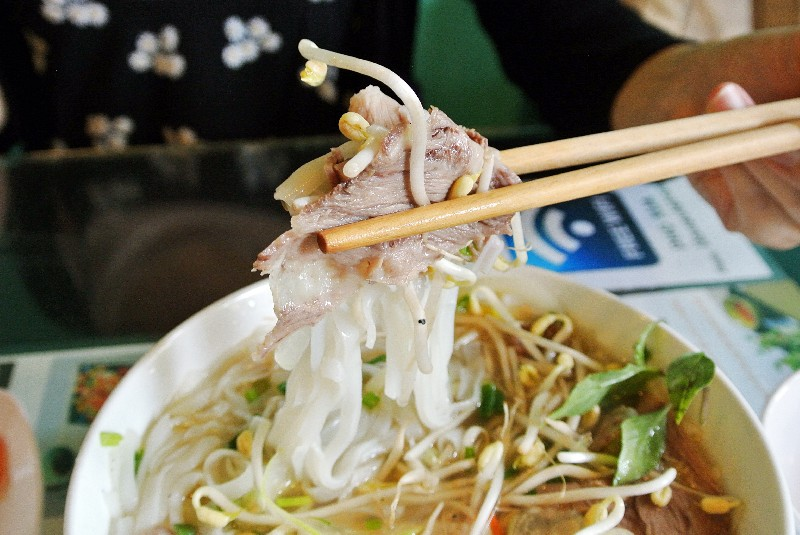
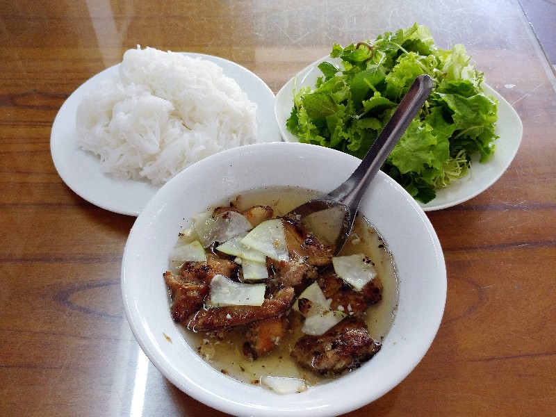
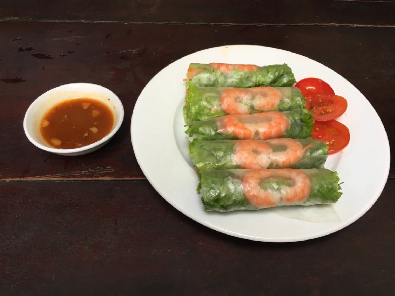
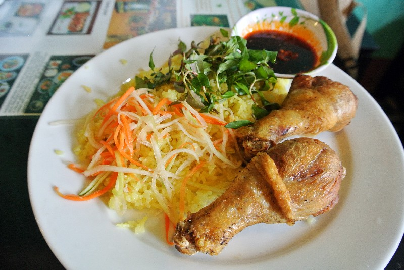
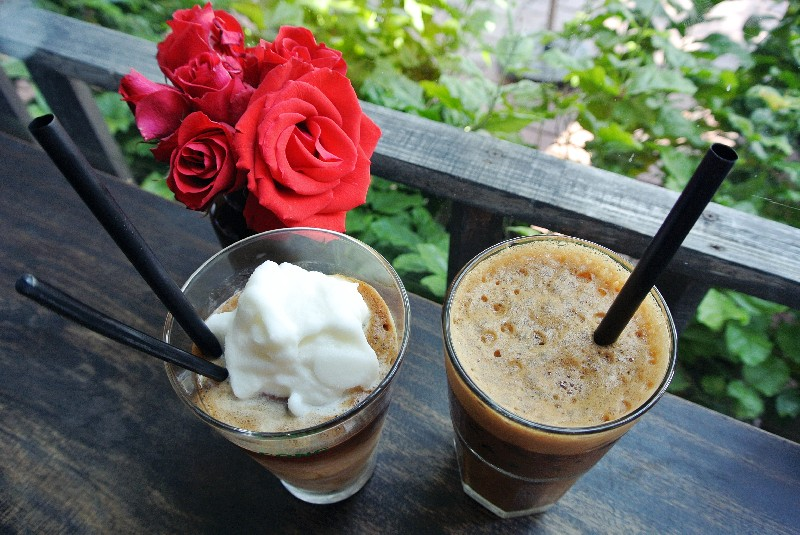
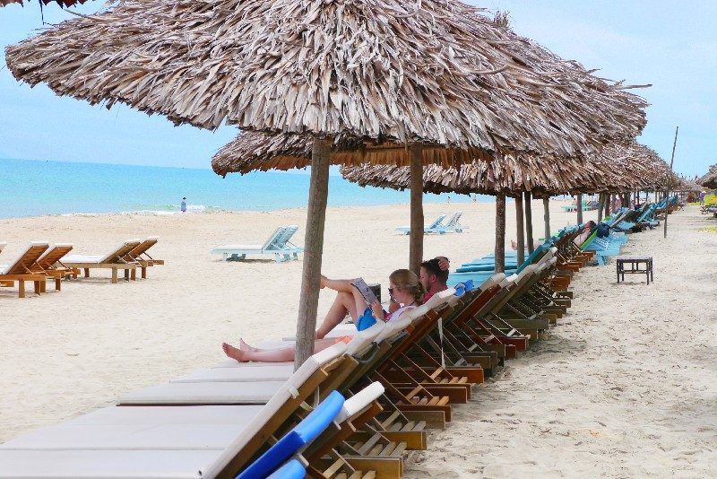
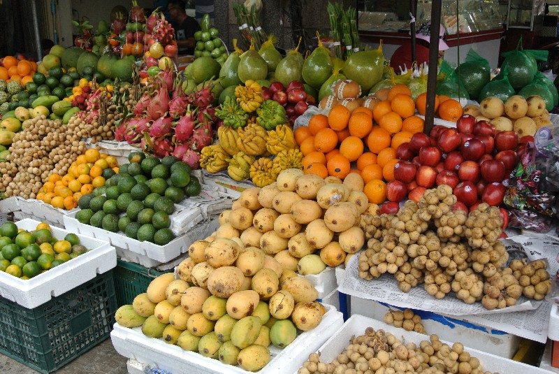
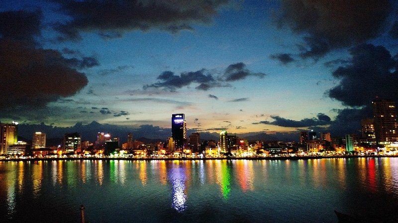
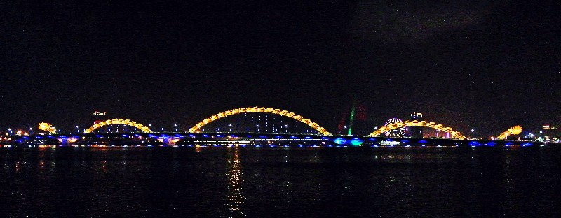

우리 입맛에 딱, 베트남 음식
베트남을 여행하기 좋은 이유 중 하나는 바로 우리 입맛에 딱 맞는 음식 때문!
한국에서도 쉽게 접할 수 있는 쌀국수 Phở를 비롯해 면을 주로 하는 요리가 많은 베트남 음식.
게다가 한 그릇 먹고, 맛있으면 한 그릇 더 시켜 먹어도 부담 없을 만큼 저렴한 가격까지.
어찌 베트남을, 베트남 음식을 사랑하지 않을 수 있으랴!
베트남의 대표 음식

베트남을 대표하는 음식인 쌀국수, 퍼(Phở).
첨가되는 고기에 따라 종류가 나눠지는데, 소고기를 넣은 퍼보(Phở bò)와 닭고기가 들어간 퍼가(Phở gà)가 유명하다.
베트남 사람들의 단골 아침 메뉴.

분짜(Bún Chả)
석쇠에 구운 돼지고기를 새콤달콤한 소스에 넣어 쌀국수, 야채와 함께 먹는 음식.
한국 사람이라면 좋아하지 않을 수가 없는 마성의 음식으로 더위에 지쳐 입맛이 없을 때 제격이다.

고이꾸온(Gỏi Cuốn)
우리에게 월남쌈으로 잘 알려진 음식.
라이스페이퍼에 야채와 새우, 고기 등을 넣고 싸 먹는다.
짜조가 튀겨낸 것이라면, 고이꾸온은 생으로 먹기 때문에 담백하고 신선하다.

껌가(Cơm Gà)
닭고기 육수로 지은 밥 위에 부드러운 닭고기를 얹어주는 덮밥.
간단한 음식이지만 감칠맛 나는 간장 소스를 끼얹어 먹으면 환상의 궁합을 자랑한다.

카페 쓰어다(Cà phê Sữa Đá)
세계 2위의 커피 생산국인 베트남. 언제 어디에서나 손쉽게 커피를 맛볼 수 있다.
더운 날씨로 인해 여행자들에게 가장 인기 있는 종류는 단연 아이스 커피.
그중에 카페 쓰어다는 연유를 넣어 달달하게 마시는 아이스 커피로, 진하면서 달콤한 맛이 일품이다.
조금 느린 여행, 다낭
하루, 일주일, 한 달이 너무도 빠르게 지나가는 한국과 달리, 다낭에서는 조금 천천히, 여유 있는 시간을 가져 보자. 한국으로 돌아가면 언제 그랬냐는 듯 다시 바쁜 일상을 보내겠지만 이곳, 다낭에서 만큼은 하루 24시간을 오롯이 나만의 시간으로 채워 보자. 다낭에서 조금 느린 여행을 하는 법.
다낭 여행을 즐기는 법
▶비치파라솔 아래에서 책 읽기

▶쌀국수 맛집 찾아보기
▶열대 과일 먹기

▶노을 지는 한 강 거닐어 보기

다낭의 밤은 낮보다 아름답다
한 강
다낭의 중심을 가로지르는 한 강
시내와 해안가를 나누는 경계
낮과 밤이 아름다운 다낭의 명소
다낭 중심을 남북으로 가르며 흐르는 한 강은, 강을 기준으로 크게 시내와 해안가 방향으로 나뉜다.
강을 잇는 4개의 다리 중, 한 강교(Cầu Sông Hàn)와 용교(Cầu Rồng)가 대표적이며 밤이 되면 화려한 LED 조명으로 빛나 더욱 아름다워진다.
강가 근처로 카페, 펍, 레스토랑이 모여 있어 야경을 즐기는 여행객들로 붐빈다.

다낭 시내와 해안가를 나누는 경계, 한 강.
뜨거운 낮 시간에는 사람을 찾아볼 수 없을 만큼 인적이 드물지만 밤에는 다들 한데 모여 휴식을 즐기는 곳이다.
강변을 따라 시원한 바람이 불어오면, 언제 그랬냐는 듯 한낮의 무더위를 모두 잊을 수 있을 것.
다낭의 랜드마크인 용교를 비롯해 새롭게 떠오르는 야경 명소인 사랑의 부두까지 둘러보자.
저녁을 먹은 후 산책 삼아 거닐기 좋은 곳이다.